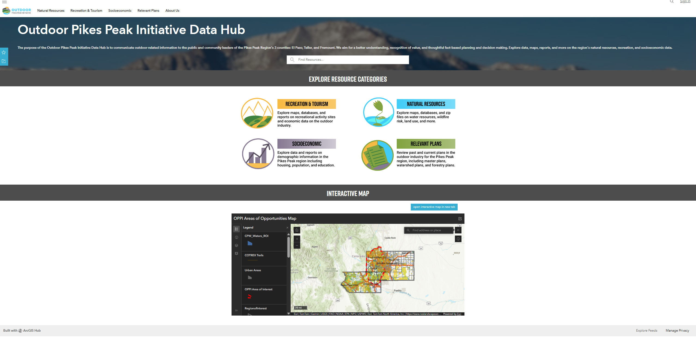
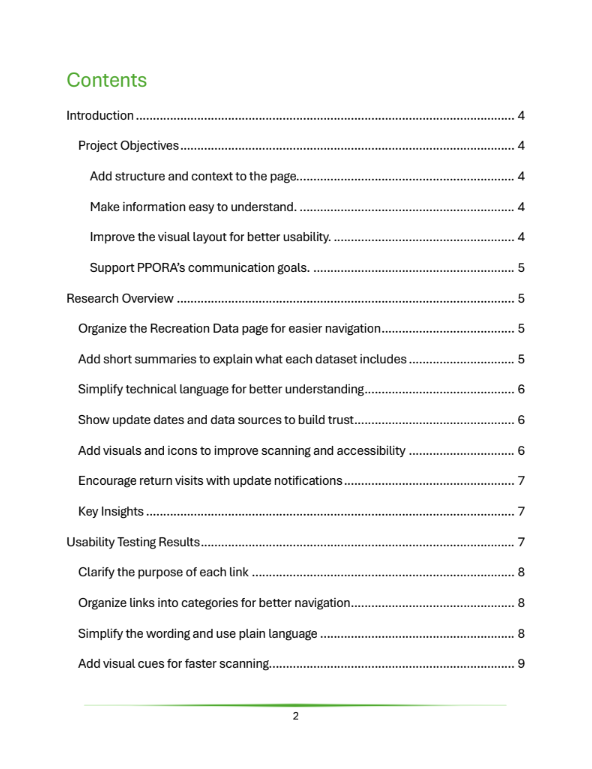
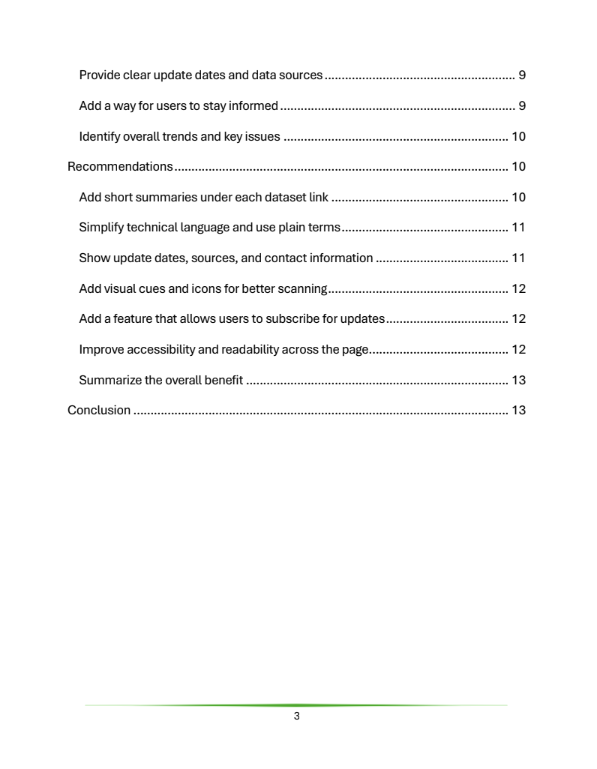
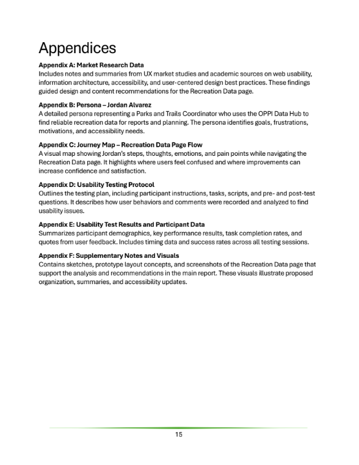

UX Writing & Technical Communication
UX Recommendation Report
Translated UX research findings into a structured recommendation report for a municipal digital services team, providing evidence-based design guidance and a prioritized action roadmap.
Responsibilities
Research Synthesis
Synthesized usability testing data and interview notes into actionable findings.
Recommendation Development
Created evidence-backed recommendations tied directly to observed user behavior.
Prioritization Framework
Developed an impact-versus-effort matrix to guide implementation decisions.
Executive Communication
Produced executive summaries for non-technical stakeholders and leadership teams.
Documentation Standards
Formatted deliverables according to institutional documentation requirements.
UX Strategy
Translated research findings into a clear roadmap for future improvements.

Overview
Transforming UX research into actionable recommendations
This project focused on improving the Recreation Data page within the OPPI Data Hub by translating user research into a structured UX recommendation report.
Using usability testing and a user flow based on the persona Nick, I identified breakdowns in how users navigated and interpreted the page. The selected page consisted primarily of unstructured links, making it difficult for users to understand available data.
The final report synthesized these findings into clear, actionable recommendations to improve organization, clarity, and usability.
Problem & Goals
Reducing confusion through structure and context
The Recreation Data page presented users with a long list of links without context, making it difficult to determine what each resource contained or how it should be used.
Usability testing with the persona Nick showed that users hesitated, clicked multiple links unnecessarily, and struggled to complete tasks efficiently.
The goal was to redesign this high-friction page by introducing clearer organization, grouping related resources, and adding short written explanations to help users quickly understand and navigate available data.
Improve Organization
Group related resources into clearly defined sections.
Provide Context
Add descriptions that explain the purpose of each resource.
Reduce Cognitive Load
Help users quickly identify the information they need.
Increase Task Success
Support faster navigation and more efficient decision making.

My Role
Conducting research analysis and report development
I conducted usability testing using the persona Nick and mapped his user flow to identify where confusion and inefficiencies occurred.
Based on these insights, I selected the Recreation Data page as the focus for redesign due to its high impact and repeated usability issues.
I synthesized research findings, developed recommendations, and structured the UX report to clearly communicate both the problems and proposed solutions to stakeholders.
Discovery & Constraints
Identifying usability breakdowns
Research included usability testing using a think-aloud protocol, user flow mapping based on the persona Nick, and analysis of comparable data hubs.
Testing revealed that users struggled with navigation due to a lack of structure and context.
The primary constraint was communicating UX issues and solutions clearly to a mixed audience while working within a limited timeframe to produce a concise, actionable recommendation report.
Information Architecture
Organizing findings around user needs
The recommendation report was structured to directly address user pain points identified through Nick’s user flow and usability testing.
Findings were grouped by themes including navigation, clarity, and content structure.
Recommendations focused on reorganizing the page into clearly defined sections, grouping similar resources, and adding short summaries under each link to provide context and improve scanning.

Requirements & Acceptance Criteria
Prioritizing recommendations based on observed behavior
Each recommendation was tied directly to observed user behavior from usability testing and user flow analysis.
Priority was given to issues that caused task failure, hesitation, or confusion.
Navigation Efficiency
Reduce unnecessary clicks and improve information discovery.
Content Clarity
Provide context that helps users understand available resources.
Reduced Cognitive Load
Improve scanning and decision-making through organization.
User Success
Support faster task completion and greater confidence.
Analytics & Iteration
Refining recommendations through review and feedback
The report was refined through feedback and iteration to ensure recommendations accurately reflected user behavior and were clearly communicated.
Revisions focused on strengthening the connection between usability findings and design recommendations, as well as simplifying language to ensure accessibility for both technical and non-technical stakeholders.

Outcomes & Next Steps
Creating a roadmap for improved usability
The final recommendations provided a clear direction for improving the Recreation Data page by introducing structured organization and contextual explanations.
Key changes included grouping links into meaningful categories and adding short descriptions to clarify each resource.
These improvements aim to reduce user confusion, improve task completion, and create a more intuitive and efficient experience.
Organize resources into logical categories.
Add contextual descriptions to improve understanding.
Reduce navigation friction and improve task completion.
Next Steps
Next steps include applying the recommended page structure, adding short descriptions beneath each resource link, and validating the revised Recreation Data page through follow-up usability testing.
Future iterations would include reviewing analytics after implementation, measuring task completion improvements, and continuing to refine content labels based on user behavior.
Learnings
This project strengthened my ability to translate UX research into clear, stakeholder-focused documentation that drives design decisions.
I gained experience synthesizing large amounts of research data, prioritizing recommendations based on evidence, and communicating findings to both technical and non-technical audiences.